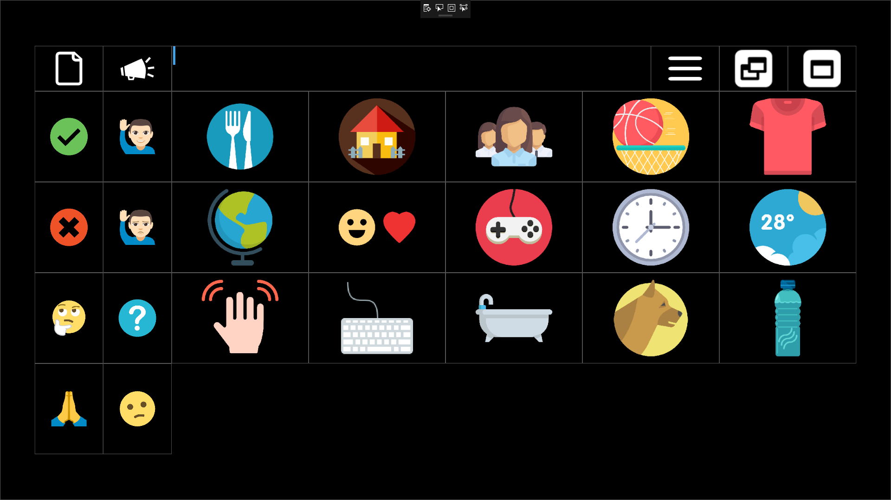
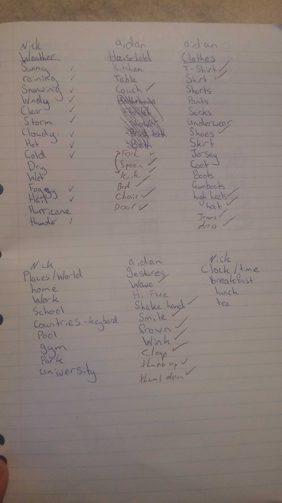
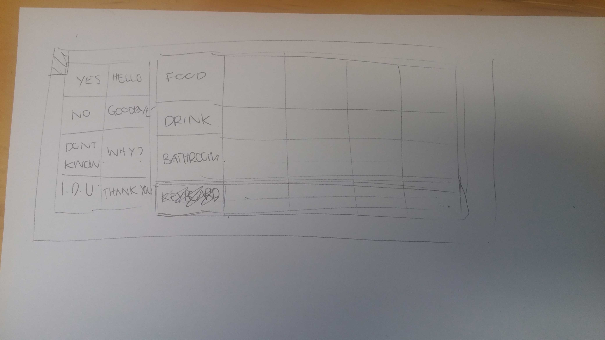
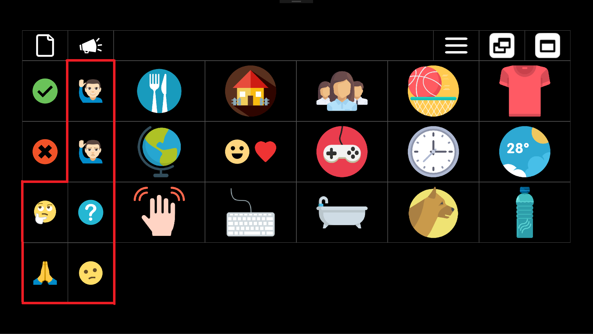
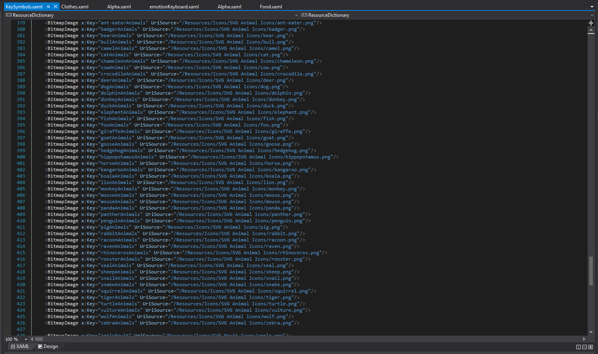
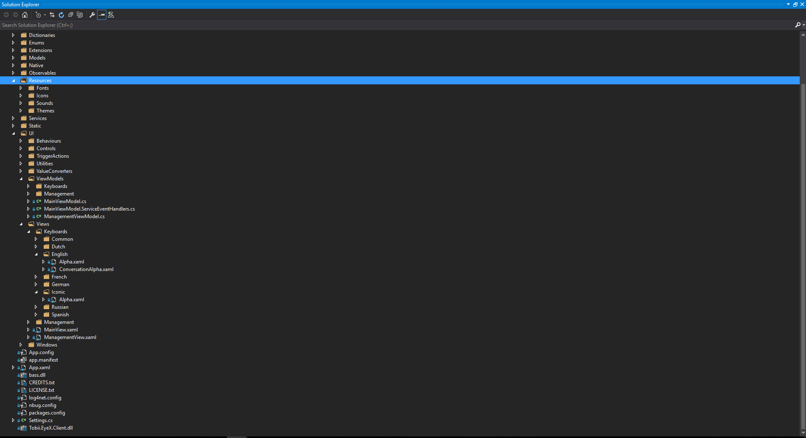
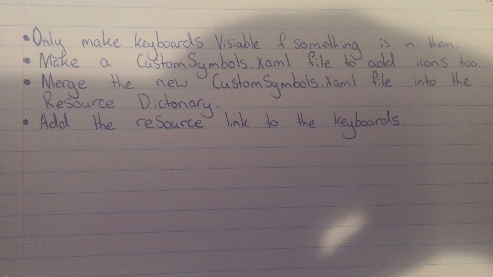

The aim of our Project during Project One was to create an open source iconic keyboard that allows users who cannot read or write to communicate via gaze aware semantic icons.
This iconic keyboards goal is to allow people with impaired motor functions who are also unable to read or write to communicate more efficiently with someone like a caregiver.

One of the first tasks that I had to do when first starting with the Iconic Keyboard was to help design a rough plan for how we wanted the Iconic Keyboard to look.
During this time I was just doing some brief research on visual aid icons before being told about the Communicator 5 software.
I quickly installed this so I could test and play around with a professionally developed application which provided a similar service that aligned with our project goals.
After briefly exploring these resources I came up with a quick Design with the help of Emerson and David.
Later on about half-way through we did have to edit the overall design of the project which was a little annoying simply because it meant a lot fiddling around with data to rearrange it as best as possible.
To further extend upon this though, we will have to acquire the help of someone a lot more specialized in this field.
Ideally because the overall design is an extremely important feature for a communication tool that can make or break the difference between someone being able to communicate their needs and wants.


After coming up with a brief Design for the layout I had to install my Tobii EyeX so that I could test out the full functionality the OptiKey provided.
However this proved to be much more difficult for me then my other group members.
After a few days of repeatedly uninstalling it and trying different software drivers and consulting there support team.
It was suggested that my USB 3.0 Controller might not possess enough bandwidth or could be somewhat faulty. After finding this out and talking with Rob.
It was suggested I simply change computers because the USB 3.0 Controller was built into the motherboard which would have made it very difficult to simply replace.
After learning these new facts I quickly found a new computer to replace mine with so I could get a feel for the extra functionality I had been missing out on.
Recommended USB 3.0 Controllers
The Third main task I had was to read through Emerson’s documentation so I could start creating Keyboards and adding icons.
This took me a while to do at the start because it was a little confusing.
I had to flick through so many different classes just to add one keyboard and just generally getting used to the code base.
While working with Emerson’s help so that we could update the documentation to make it clearer for future Users.
After helping to make the documentation a little clearer I was able to steadily begin creating various keyboards and filling them with icons found from a few main sources.
After searching for a while we decided to use icons from
Flaticon and Emojione.
Code to link a specfic Icon Key to a keyboard location.
<controls:Key Grid.Row="2" Grid.Column="1" Grid.RowSpan="2" Grid.ColumnSpan="4" IconImage="{StaticResource BackPackClothes}" SharedSizeGroup="KeyWithSymbol" Value="Backpack" />
After I was able to create my own keyboards my main task throughout the project was to keep creating keyboards and filling them with suitable icons.
Adding keyboards and Icons was what took up most of my time throughout this simply because of difficulty of thinking of things that the user may want to communicate.
After coming up with things we thought they might like to use the next problem was finding appropriate icons that was able to effectively communicate what we wanted.
Altogether this process was fairly tiresome and boring because most of it revolved around searching for suitable Icons to communicate needs, then creating the Keys for the icons to be displayed with.
One of the hardest sections to find suitable icons for was the quick links section on the main menu as well as the Time Keyboard simply because you have to think out of the box to communicate some of these items.


This was another important task of mine simply because I’m taking over and need to know as much as I can about how it functions and where things are located.
I was luckily able to learn the solution space while I was working on the project just by fixing a few bugs here and there as well as Creating Keyboards.
This was very helpful learning where a lot of the complex operations were being handled such as where the icon Uri is mapped to a data key.
While exploring this project I really began to understand the importance of good file structure due to the fact that the amount of files is beginning to reach into the high 1000’s.
Finding something you need can be very difficult and time consuming if it’s not easily accessible in such a big structure.
Learning the solution space however is still a continuous effort simply because it is such a large application and hopefully I will be able to keep learning more intricate ways in which this application works.

Overall I didn’t do very much work on this section of the project simply because I was stuck on Filling out Keyboards for much of the project.
However near the end of it I did get to play around with some of the Sizing settings to fix a bug where the Iconic Keyboard was not minimizing correctly.
I was able to fix this bug with the guidance of Emerson so that I had some Idea what I was looking for to fix it and make the Iconic Keyboard minimize correctly.
public void Maximise()
This was a big section of our project however I didn’t personally look into it as it was one of the last tasks and by far the hardest.
Emerson was able to look into and after talking with him I now have the relevant information which should be able to give me a great head start next semester.

Throughout this project I learnt various things such as the importance of time management, documentation and effective communication as well as having to learn how such a massive code base functions. I believe I have learnt that it is far more necessary to make usable documentation throughout the entire process. Instead of trying to do it all at the end because it’s just not going to be as accurate and overall usability of it is going to falter. Time management is also a very important lesson I learnt as when working in a team. Other people are often waiting on you to perform a certain task so it’s very important that you are able to complete sooner rather than later. Looking back at the project I feel that it would have been extremely useful to get the User Customization working. This would have enabled us to save a lot more time by streamlining the creation process of keyboards and the way in which Icons are added but due to time restraints and the difficulty of this it was not possible.